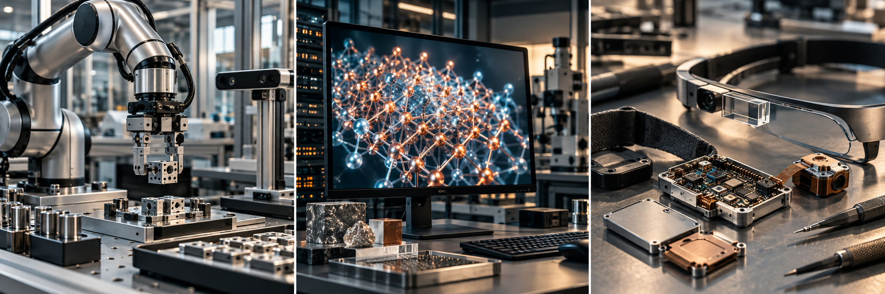
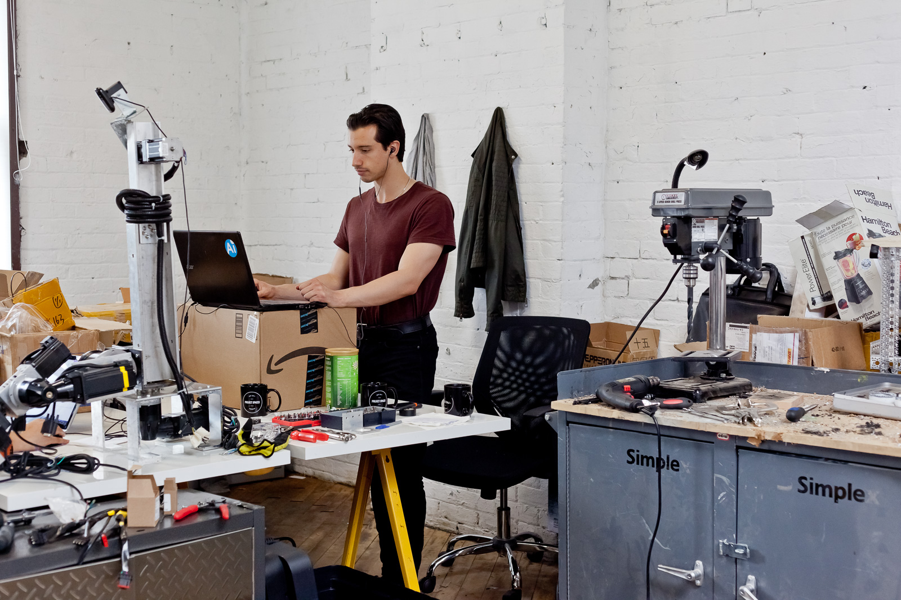
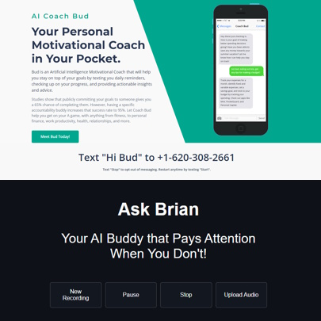
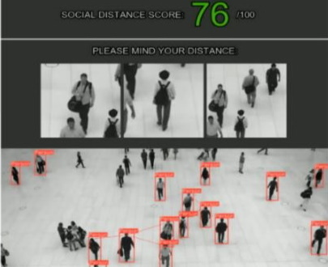
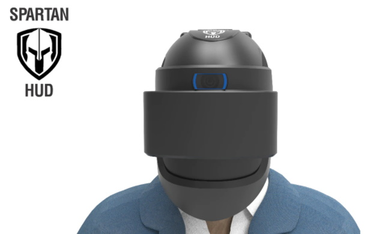
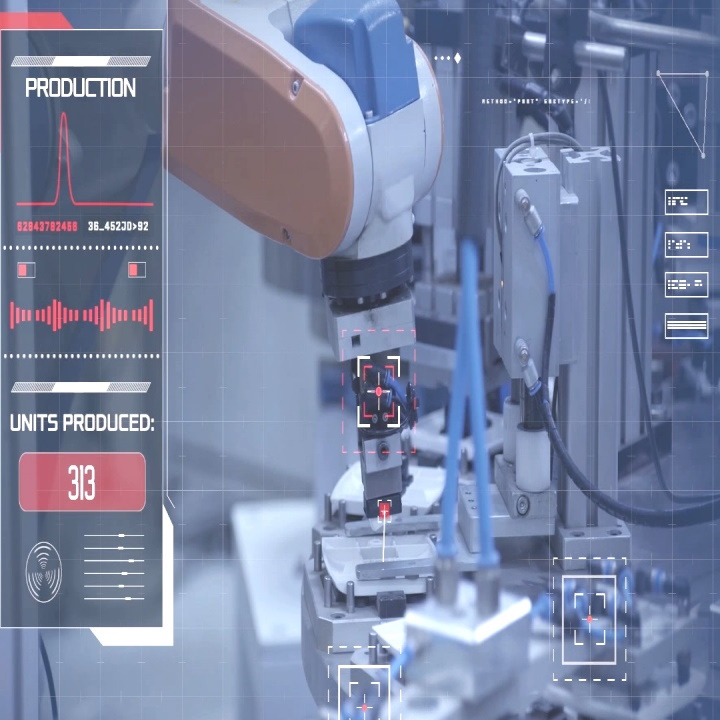
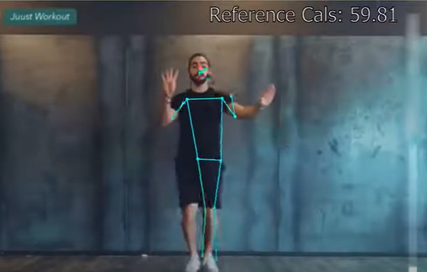
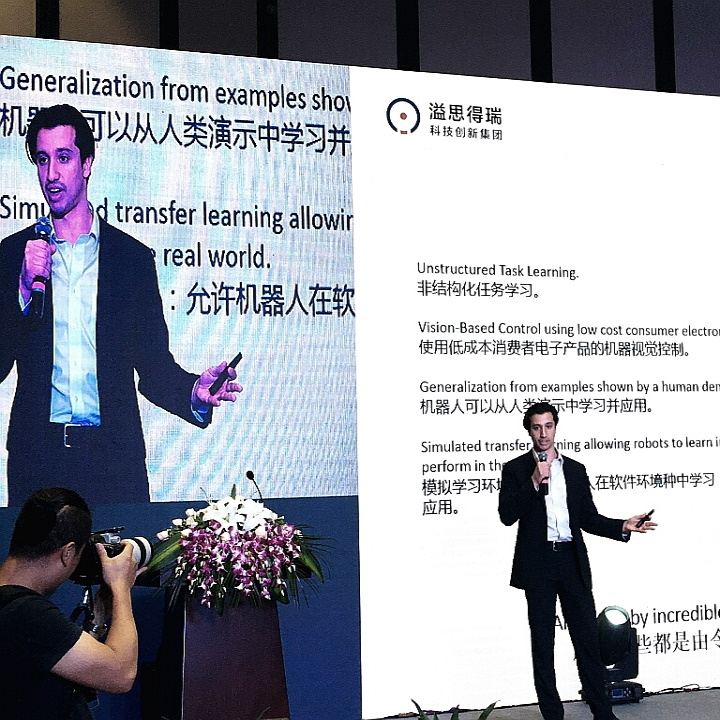

Project A.T.O.M. - Agent for Task Oriented Manipulation - is an AI robot agent for industrial robot arms. The system translates plain-English task intent into structured, safety-aware robot automation, combining natural language control, vision, calibration, task constraints, and motion planning in a single workflow. The agent sits on top of new or existing robot arms and is designed around operator-in-the-loop setup, so users can define tasks, inspect constraints, generate repeatable motion programs, and move from high-level instructions to reliable robot execution with less custom integration work. The project also includes practical workcell demos for object recognition, tool handoff, packaging tasks, and multi-step autonomous manipulation in shared workspaces.
Engineering / Robotics / AI
James Schuback
Robotics, artificial intelligence,
and intelligent hardware.


About
The personal website and portfolio of James Schuback, featuring a selection of past works and projects.
- Current role
- Associate Director at S&P Global
- Education
- Engineering Science, Major in Electrical and Computer Engineering, University of Toronto
- Consulting
- Contact for availability
Skills and domain expertise
- AI & Machine Learning - Neural Networks, Transformers, CNNs, LLMs, VLMs, RAG, LoRA, Data Science
- Software - Python (PyTorch, OpenCV, Numpy, Pandas), Linux, AWS, SQL, JS, Java, C/C++, Assembly
- Hardware - Robotics, Electronics, Circuits, Firmware, CAD, 3D Printing, PCBs, DFM
- Creative Design - Expert Prototyping, High-Fidelity POCs, Entrepreneurial Projects, Stakeholder Interfacing
Summary: Technologist and senior engineer with 10+ years of experience developing and launching products at the intersection of hardware and intelligent software. Expertise across robotics, AI, ML, embedded systems, financial modeling, and software engineering.
Selected work & experience
Experience and Project Highlights
AI Materials Discovery is an AI software platform for identifying structural material candidates against real engineering baselines. The system compares materials from large public datasets against common references such as 304 stainless steel, 6061-T6 aluminum, Ti-6Al-4V, silicon carbide, and titanium diboride across stiffness, shear, density-weighted, and related mechanical metrics. It then filters candidates by engineering constraints, performs AI-assisted materials similarity and synthesis research search across large academic corpora, and uses agentic context retrieval to draft plausible synthesis steps from relevant prior work. The goal was to connect engineering specifications to ranked candidates and early AI-generated synthesis paths, instead of stopping at abstract property prediction.
VLMT - Vision Language Model Tuner - is a set of GUI programs to allow users to easily navigate the pipeline of finetuning their models for custom datasets, covering data labeling, training, and inference testing. The project demo uses Qwen2-VL-7B-Instruct (Vision Language Model) running locally, and trains LoRA (Low Rank Adaptation) models which 'add on' to the base VLM to address specific applications. The project is easily extended to other larger VLMs running on cloud server platforms. This framework (custom dataset + VLM + LoRA) excels at achieving very high performance for specific vision tasks with limited training data. The GUI programs provide an intuitive and convenient interface to label data and create datasets, set up training runs, and inspect and debug testing results of the final models.
Spartan HUD Alpha is a smart tactical helmet being prototyped for military use: see and shoot around cover, access real-time info and communications, and develop on a full PC. By connecting a rail-mounted "GunCam" to the heads-up display, operators can safely and effectively see and shoot around obstacles, giving a huge tactical advantage. The unique 'Partial Mixed Reality' is a hybrid approach that allows users to glance down and see the display easily and comfortably when needed, while leaving the vast majority of their vision completely unobstructed. A full Linux-based computer powers the system.
We successfully crowdfunded the project and doubled our initial sales goal. Check out project overview video and the Kickstarter.
Palmer builds further upon the AI Brain Bank project, to become a desktop office worker AI assistant. Palmer ingests - learns and organizes data - about an entire company (such as a shared cloud folder) and is then able to work with you. Palmer will answer any questions you have with company-specific sources; generate internal memos and details; create and edit powerpoint presentations; and even create and run Python code on your computer! Developed in early 2024, Palmer combines advanced RAG with 'actions' that control the user's computer. It's a single .exe program that can run locally on any machine.
This prototype is very powerful, albeit early - big companies are just now starting to create AI models that combine LLMs with computer-controlling actions. Check out the exciting demos and use cases in the video.
The AI Brain Bank is the ultimate 'chat with everything' app that lets you chat with all your data. Upload your text and pdf files, audio files, web pages, and even YouTube videos, and ask anything you want! This is a fully functional web app I developed, leveraging a custom-built RAG vector database solution that out-performed other commercial options available at the time. Being able to organize uploaded files into 'contexts' (folders) gives users powerful and exciting capabilities, such as asking questions/chatting with an entire YouTube channel's worth of content.
The project is hosted on a DigitalOcean Linux-based server, uses PostgreSQL, Flask, Stripe, and other modern web technologies. It has been running profitably from June 2023 up into 2025 and beyond.
07 / Applied language models
Large Language Model Software

With the massive leap in capabilities of LLMs circa 2022/23, I started to identify real-world problems and use-cases that could be solved with them, and prototyped a few early solutions.
Coach BUD is an Artificial Intelligence Motivational Coach that will help you stay on top of your goals by texting you daily reminders, checking up on your progress, and providing actionable insights and advice. Using a convenient SMS (texting) interface, this project brings the power of AI assistance to the user's pocket. A novel LLM-based affiliate link product recommendation system was prototyped, creating AI-generated product referrals based on unique, relevant, and sensitive user text conversations about their goals - the perfect sales context!
Ask Brian is 'Your AI Buddy that Pays Attention When You Don't!'. Inspired by the common problem of people falling asleep/zoning out during lectures, meetings, or even conversations, Ask Brian is an AI assistant which lets you chat with any audio recording - giving users summaries, search, and Q&A over audio data. This is a full stack web solution utilizing powerful AI API backend services to create a full chat product experience. Ask Brian uses my self-made large text vectorstore, which initially worked better than existing market solutions. The plan is to extend the project to help users remember and recall info from many other sources of data.
08 / Computer vision
Safe Vision Technologies

Inspired by the rapid advances in health tech during the pandemic, I developed a prototype computer vision system for social distancing. Safe Vision Technologies combined state-of-the-art machine learning and object detection with novel computer vision algorithms designed to detect proximity between people, score crowdedness, and encourage healthy distancing habits. The system is designed to run on a high-end modern GPU, and can analyze any existing webcam feed or video stream.
This project was not commercialized as I had been involved in another engineering position. Throughout 2021 I worked on SVT for fun on nights and weekends to bring this project to life, from concept to fully functional software prototype, and own all the IP developed as a result. The software stack is primarily done in Python, and used frameworks such as PyTorch, Keras, TensorFlow, and Pandas. One of the main algorithm novelties was combining real-time monocular depth estimation with rapid segmented object detection, and filtering the modules together to create a real-time xyz position object detector (applied to people).
09 / Augmented reality
Spartan HUD

In 2020 I developed Spartan HUD: an augmented reality helmet that helps you work smarter, access critical information, communicate, and have fun. My goal was to develop a platform that overcame limitations in existing VR/AR headsets, such as comfort, screen size, computing power, and programmability. We achieved commercial viability and beat our crowdfunding goal by over 230%, delivering dozens of helmets 3 months head of schedule and at a net profit.
Going from concept to launch in 6 months was a difficult multi-faceted project spanning both hardware and software constraints. We overcame challenges in design and manufacturing, but also software as we developed a fully-fledged developer platform and implemented machine learning demos to showcase the future potential of our platform. Check out some of the media below, as well as the Kickstarter.
10 / Robotics & industrial vision
Empirical Automation

I started Empirical Automation in 2016, initially with a focus on constructing low-cost robotic arms for research, and branched out into specialized computer vision software.
We designed, built, and sold whole robotic arm systems based on specifications to match the human arm: 80cm length, 3-5kg payload, 1mm precision and repeatability, and at a price point researchers and developers could afford at only a few thousand dollars. The product was a complete USB plug-and-play solution, programmable right out of the box with customizable sensor options.
Following this I developed Empirical Vision, a computer vision software that can learn to detect repeatable patterns of actions in videos, and create reports on productivity and quality control.
In 2019 the company combined its learnings to prototype a robotic plywood repair system, which created a system to visually recognize defects in plywood boards, which the software learned by observing human workers. Afterwards, specific locations are created, parsed, and transmitted to an industrial robot to apply putty paste for the repair.
Throughout this venture I was the lead engineer; please see the videos below for demo videos showcasing these phases of the company.
11 / Vision & fitness software
WeMoov Fitness

WeMoov Fitness is a web software for fitness that tracks your calories in real time and lets you transform any video into a workout. Using computer vision skeletal tracking enabled by lightweight machine learning, combined with a proprietary physics algorithm, WeMoov can track the motion of people in videos and accurately estimate the calories they burn while moving.
The project involved a wide combination of software technologies including JavaScript, TensorFlow JS, Node.js, and a cloud compute backend. This was a fun hobby project of mine designed to teach myself some new skills and create something fun and visual on the web. This project, as in the wearable computer projects I've worked on, combine the physical world with software analysis, a strong interest of mine.
(Youtube embedding has some issues due to copyrighted music - just click below and check it out!
12 / Background & ventures
Other Experiences

Even before entering engineering school I've had a passion for building things, especially technology related. I've also developed a healthy appreciation for all the external factors leading to successful project outcomes. Over the past years I've learned to pitch projects, raise money, and work with teams on different continents. This includes having been selected twice to be a part of Next Canada's prestigious entrepreneurship programs, and traveling to Europe and Asia to build out my robotics projects and ventures.
In my last year of university I founded Onyx Motion Wearable Technology based on my thesis research of motion recognition in 2013. The IP I developed was acquired by a larger competitor company, and to this day powers many embedded wearable devices to help with everything from physiotherapy to golf and tennis swings.
I've worked at multiple companies as a data scientist and software engineer, in fields ranging from silicon chip design to medical tech, wearable tech, robotics, and augmented reality. I enjoy working on interesting technical projects and challenges on my free time, such as participating in a Kaggle competitions and Hackathons. Recently I have focused on new AI and LLMs, and my Spartan HUD series of helmet projects.
Feel free to connect with me on LinkedIn.
Below are a few highlights from additional past works, including various media.
13 / Press & recognition
Media
- First Place at Canada's Largest Wearable Tech Hackathon ↗BetaKit
- Leading U of T's Engineering Class of 2014 into the Next 36 ↗University of Toronto Engineering
- Spartan HUD Wearable Tech Crowdfunding Campaign Gearing for Launch ↗PR News Report
- Kickstarter: Spartan HUD Smashes Its Funding Goal ↗Kickstarter
Contact
Get in Touch
All business related inquiries can be sent to the email address below: